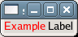

Parses str which is marked up with the Pango text markup language, setting the label's text and attribute list based on the parse results.
Example 87. Setting GtkLabel Text with Pango Markup
<?php
// Create a window to hold the label.
$window = new GtkWindow();
// Set up the window to close cleanly.
$window->connect_simple('destroy', array('Gtk', 'main_quit'));
// Create a label.
$label = new GtkLabel();
// Set some text with Pango markup.
$label->set_markup('<span color="red">Example</span> Label');
// Add the label to the window.
$window->add($label);
// Show the window and start the main loop.
$window->show_all();
Gtk::main();
?> |
